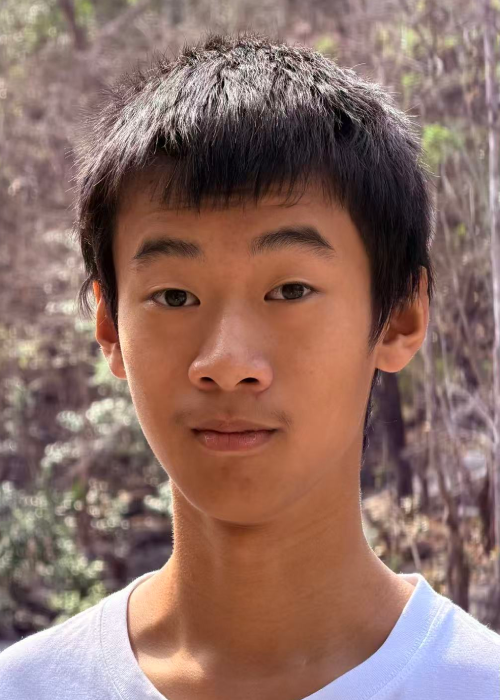

REPUBLIC OF JORASAKUHUVO
TTro jRD]Fs
TTro jRD]Fs

Current President – 1st President of Jorasakuhuvo
Name: Pemife Noraane
Term of Office: V.T. 2090-02-01 ~ V.T. 2090-04-07 (2026-01-29 ~ 2026-04-29)
Nationality: Vaso Jorasakuhuvian
Votes Received: 1
Eligible Voters: 1
Turnout: 100%
The government of the Republic of Jorasakuhuvo derives its authority from the will of the people. Citizens authorize the government to administer the state and retain the right to withdraw that authority if they no longer support the government.
The President serves as the head of government and is elected by all citizens. The first President was elected at the founding of the state.
At the current stage of development, the President exercises the primary administrative authority of the government and is responsible for the management of state affairs.
Jorasakuhuvo does not currently have a legislative assembly, though such an institution may be established in the future as the state develops.
Judicial institutions exist to address legal matters and disputes. However, a comprehensive legal code and standardized criminal penalties are still under development.
The government of Jorasakuhuvo upholds the principles of fairness, equality, openness, freedom, peace, and democracy, which guide the development of the state and its institutions.
Office of the President
The President serves as the head of government and oversees the administration of the Republic of Jorasakuhuvo.
Government Administration
At the present stage of development, government functions are centrally administered under the authority of the President. Public administration, state affairs, and institutional responsibilities are managed directly by the government.
Judicial Institutions
Judicial institutions exist to address legal matters and disputes. A comprehensive legal system and standardized criminal code are still under development.